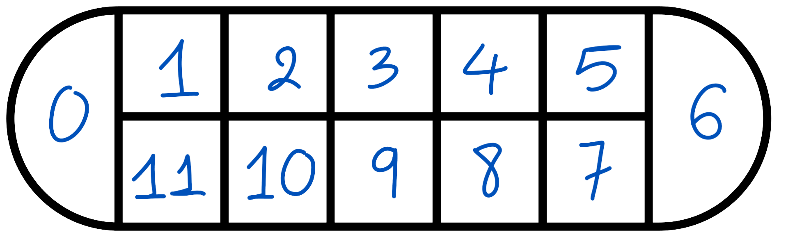

Welcome to O An Quan AI Challenge 2024
The O An Quan AI Challenge is a competition where participants can submit their own code to play against our benchmarking engine.
The benchmarking engine has been trained using the MuZero algorithm in 100 self-played games.
To participate in the challenge, we kindly ask the participants to submit the checkpoint trained according to the rules of the game as outlined below.
Any submission that fails to comply with the format of the checkpoint will be disqualified.
Join us in this exciting AI challenge and showcase your skills in the game of O An Quan!
Rules of O An Quan
O An Quan is a traditional Vietnamese game played by two players.
The game is played on a board with 10 pits and 2 stores.
Each player controls 5 pits and 1 store.
The game starts with 5 seeds in each pit.
The objective of the game is to capture more seeds than the opponent.
The game ends when one player has no more seeds in their pits.
The player with more seeds in their store wins the game.
Scattering
Players play rock paper scissors to determine the first player.
The first player takes up all the pieces of any rice field square on their side of the board and distributes (Vietnamese: rải: literally: scatter) one piece per square, starting at the next square in either direction. When all pieces are distributed, the player repeats by taking up the pieces of the following square and distributing them.
If their side of the board is empty, they must use five previously-won pieces to place one piece in each square on their side before repeating the distribution. (If they do not possess any pieces, they must borrow a piece from the other player and return it when counting the points at the end of the game.)
Capturing
When the next square to be distributed is empty, the player wins all the pieces in the square after that. A square that contains a lot of pieces is the nhà giàu square (literally: rich square).
When the next square is an empty Mandarin square, or the next two squares are empty, it becomes the other player's turn.
In some game variations, the Mandarin square can contain little citizen pieces called quan non (literally - quan: Mandarin; non: young or unripened) which may not be captured. In this case, the Mandarin square is called the nhà quan non square (literally: Mandarin's house square).
Winning
The game ends when one player has no more pieces in their rice fields. The other player wins all the pieces left on the board, including those in the Mandarin square. The winner is the player with the most pieces.
Our Variation
We have made the following simplifications to the game:
- The game ends immediately when one player reach 31 points.
- The game ends immediately when both mandarin squares are empty.
- The player with no more pieces in his territory can keep playing, regardless of if he has at least 5
captured pieces or not. However, his point will be deduced by 5.
Submission Format
File Format
The submission should be a checkpoint file in the format of a .tar.gz file.
The checkpoint file should be named model.ckpt, model.checkpoint, or model.pth depending on the framework used.
Output Format
The output of the model should be a number from 0 to 23, indicating the action to be taken given a state of the board.
The mapping from the number to the action is as follows:

Given the numbering above, a move should be numbered
2*x if it is clockwise and
2*x+1 if it is counter-clockwise.
Furthermore, the first player possesses squares from 1 to 5, while the second player possesses squares from 7 to 11.
Training Benchmarking
The benchmarking engine will play 100 games against the submitted model, with 50 games as the first player and 50 games as the second player.
The benchmarking engine is trained using the MuZero algorithm, with on 100 self-play games with 1000 steps each, taking around 1.5 hours on
Intel(R) Core(TM) i5-8365U CPU @ 1.60GHz. We kindly ask that the participants perform moderate training steps to match the capabilities of the
algorithm rather than through bruteforce training. More information can be found on the
Official GitHub of the Challenge A submission is deemed successul if it wins > 50% of the games as the first player and >= 50% of the games as the second player.
The participant should then expect an invitation to submit the source code for verification. Due to intensive amount of work required for verification, please expect the verification process to take up to 2 weeks.
The leaderboard will be updated on a weekly basis.
Writeup
The participant should also expect to be invited to submit a writeup of the model, which will be published on the website. Even though the writeup is only mandatory if participants who compete for prizes, we highly encourage
each and every participant to share their algorithms and improvements to the game. We are committed to reviewing and publishing the writeup within 2 weeks of submission.